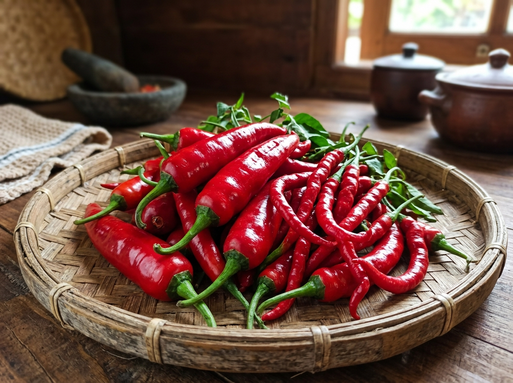

🔴 Si Primadona Warna
Cabai Merah:
Cantik Merona, Bikin Lapar Seketika!
Bayangkan rendang Padang atau balado telur tanpa cabai merah? Pasti pucat dan kurang menggigit! Cabai merah adalah kunci estetika dan rasa gurih manis alami masakan Indonesia.
Tingkat Pedas
10.000 - 30.000 SHU
Nama Latin
Capsicum annuum L.
Fungsi Utama
Warna Merah Alami & Aroma Sedap

Cabai Merah Keriting & Besar
Kombinasi sempurna warna & kepedasan sedap
Fitur Interaktif 1
Kalkulator Kebutuhan Cabai & Bumbu
Mau masak buat arisan keluarga atau makan malam berdua? Masukkan jumlah porsi, biar bumbu cabaimu pas dan gak bikin mules!
4
Orang
💡 Tips Emak: Cabai keriting bertugas memberi sensasi pedas dan aroma, sedangkan cabai merah besar memberi volume kuah kental dan warna merah menyala!
Takaran Bumbu untuk Sambal Balado Padang:
Cabai Merah Keriting
160 gram (~27 buah)
Pemberi rasa pedas & aroma gurih
Cabai Merah Besar (TW)
80 gram (~5 buah)
Pemberi warna merah & tekstur saus
Bawang Merah & Putih
8 butir Merah & 4 siung Putih
Aroma wangi umami nusantara
Minyak Goreng
6.0 Sendok Makan
Untuk menumis hingga terbit minyak merah
Duel Dua Saudara
Cabai Merah Keriting vs Cabai Merah Besar
Sering keliru saat belanja di pasar tradisional? Ini dia beda fisik dan fungsinya di dapur!
〰️
Cabai Merah Keriting
- Bentuk: Panjang langsing, bergelombang atau keriting tidak beraturan.
- Kadar Air: Relatif sedikit / lebih padat dagingnya.
- Tingkat Pedas: Lebih pedas dan menggigit di lidah dibanding jenis besar.
- Cocok untuk: Sambal terasi, tumis kangkung, balado basah, dan bumbu halus kering.
🪵
Cabai Merah Besar (TW)
- Bentuk: Gemuk, lurus montok, kulit mulus mengkilap.
- Kadar Air: Cukup banyak, daging tebal dan renyah.
- Tingkat Pedas: Ramah di lidah, rasa manis alaminya lebih dominan.
- Cocok untuk: Hiasan (garnish tumpeng), irisan tumis saus tiram, sambal goreng ati.
Dapur Praktis
Resep Interaktif: Sambal Balado Merah Khas Minang
Rahasia balado merah yang wangi gurih dan warnanya tidak menghitam. Centang setiap langkahnya!
Bahan Balado Juara:
- 🌶️ 15 buah Cabai merah keriting
- 🔴 3 buah Cabai merah besar
- 🧅 8 butir Bawang merah Sumenep
- 🍅 1 buah Tomat merah ukuran sedang
- 🍃 3 lembar Daun jeruk purut (buang tulang daunnya)
- 🧂 Secukupnya Garam, gula, dan minyak kelapa/sayur
✨ Trik Rahasia Warna Merah Menyala:
Rebus cabai dan tomat dalam air mendidih selama 2-3 menit saja sebelum diulek kasar. Proses blanching ini mematikan enzim perubah warna sehingga baladomu tetap merah menggoda berjam-jam!
Progress Masak: 0%
✓
Langkah 1: Rebus cabai merah keriting, cabai merah besar, dan tomat sebentar saja di air mendidih (2-3 menit) sampai sedikit layu, lalu tiriskan.
✓
Langkah 2: Tumbuk kasar cabai dan tomat bersama bawang merah. Jangan diblender terlalu halus supaya ada sensasi bulir cabai saat dimakan.
✓
Langkah 3: Panaskan minyak agak melimpah di wajan dengan api sedang.
✓
Langkah 4: Tumis ulekan balado dan masukkan daun jeruk purut yang sudah disobek agar aromanya menguar wangi.
✓
Langkah 5: Beri garam dan sedikit gula. Masak terus sampai minyak berwarna kemerahan dan terpisah dari sambal. Angkat dan siram ke atas telur atau ayam goreng!